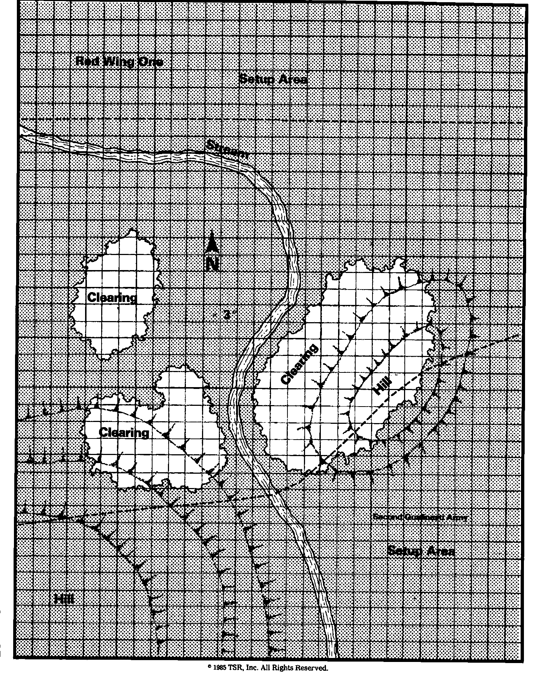

龙枪战役：奎灵诺斯之战 Dragonlance Scenario: Battle of Qualinost
邪恶龙骑将的军队席卷克莱恩，所有阻挡者都被摧毁。古老奎灵那斯王国的精灵无力阻止龙与盟军，只得忍痛放弃故土，撤往更安全的海岸。
但撤离也受到迅猛攻势威胁。三支邪恶军队逼近，随时可能切断退路。勇敢英雄正冒险进入帕克塔卡斯，若成功可牵制一支龙军；另两路从北方来，精灵必须把兵力分为第一、第二军，拖住敌人，让同胞逃走。
红翼第四军进度已受阻，精灵尚有一线机会；最大的红翼第一军却直奔首都奎灵诺斯，只有奎灵那斯第二军挡路。
统治者之子波修斯·吉尔德里夫 Porthios Guildleaf 指挥精灵；红翼龙骑大将威尔米纳德 Verminaard 决心把精灵从克莱恩抹去。这场战斗将决定民族命运。
战场多层高差、大半森林，可用附赠纸模及地形指南制作。因森林居多，也可只标空地。精灵第二军先部署，红翼第一军后部署。可用任何合法队形、战前施法，飞行生物可以空中开局。白昼作战，使用全部规则，须记录轮数。
十二轮后，离开桌面南缘的敌军至多十二模型，精灵胜；红翼第一军至少有二十友模型离开南缘，则龙军胜；其他结果平局。
特殊规则 1。离场模型须先在一次移动阶段到达南边并停下，即使还有移动。后续任一移动阶段，再宣布离桌。另放待战终统计。溃逃的邪恶模型不能从南缘离场。
特殊规则 2。卡帕克龙人可用有毒唾液涂剑。须整轮不移动、不近战；遭射击或魔法不妨碍涂毒，但本轮溃逃则失败。毒使目标麻痹 2–12 轮。涂毒后有效三游戏轮，即使用于近战也不立即耗尽。
特殊规则 3。两种龙人冲锋时可口衔武器、四肢奔跑，这就是名册中的 15 英寸移动率。此基础上仍可取得通常冲锋移动加成，并在冲锋结束正常攻击。

上一节：高级战役：梅雷尔渡口之战 Advanced Game Scenario: Battle of Merrell’s Crossing
下一节：主力军 Main Body：英雄与指挥官